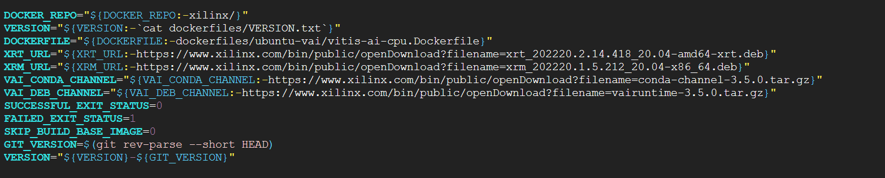

Vitis-AI cuda-gpu 修正
主要是在實行 docker_build 腳本時遇到Multi-download failed的錯誤，經過爬文之後發現不知道是conda還是mamba的版本過舊導致的錯誤?
在 AMD 的論壇發現這個錯誤也有許多人反映，但是上面提供的解決辦法大多都是額外拉非官方的 docker container。
我採用的策略是事先下載要求的壓縮檔，並配合 Conda-Forge 安裝 Python 套件(避開官方)。
( 本篇主要是專注在 debug 的部分，至於詳細安裝過程筆者參考 此 youtube 影片 )
配置
筆者是在 gcp 上租借 VM 來使用，配置如下 :
步驟 1：手動準備關鍵檔案
與其讓 Docker 在不穩定的網路中下載，不如先手動下載好並掛載進去。

在 docker_build 這個腳本當中，就可以發現運行時抓取的位置，所以這邊可以直接對 conda-channel 做下載的動作(wget)。
下載 Vitis-AI Conda Channel
-
檔案名稱：conda-channel-3.5.0.tar.gz
-
下載位置：https://www.xilinx.com/bin/public/openDownload?filename=conda-channel-3.5.0.tar.gz
-
放置路徑：~/Vitis-AI/docker/conda/conda-channel.tar.gz (請改名為此，方便腳本讀取)
完整指令為 :
| wget -O conda-channel-3.5.0.tar.gz https://www.xilinx.com/bin/public/openDownload?filename=conda-channel-3.5.0.tar.gz
mv conda-channel-3.5.0.tar.gz ~/Vitis-AI/docker/conda/conda-channel.tar.gz
|
然後修改 docker/common/install_torch.sh
找到原本
| if [[ ${VAI_CONDA_CHANNEL} =~ .*"tar.gz" ]]; then
cd /scratch/;
wget -O conda-channel.tar.gz --progress=dot:mega ${VAI_CONDA_CHANNEL};
tar -xzvf conda-channel.tar.gz;
export VAI_CONDA_CHANNEL=file:///scratch/conda-channel;
fi
|
的地方，換上：
1
2
3
4
5
6
7
8
9
10
11
12
13
14 | if [[ ${VAI_CONDA_CHANNEL} =~ .*".tar.gz" ]]; then
cd /scratch/;
# 如果本地有檔案，就跳過 wget的部分
if [ -f "conda-channel.tar.gz" ]; then
echo "Detected local conda-channel.tar.gz, skipping download..."
else
echo "Downloading conda-channel from remote..."
wget -O conda-channel.tar.gz --progress=dot:mega ${VAI_CONDA_CHANNEL};
fi
tar -xzvf conda-channel.tar.gz;
export VAI_CONDA_CHANNEL=file:///scratch/conda-channel;
fi
|
理論上做到這邊，就可以避開Multi-download failed的錯誤，但是這個壓縮檔中好像只含有 Xilinx 自己的安裝包，沒有 python、pandas 這些東西。而這些東西腳本應該會到Anaconda做安裝的動作。
但是筆者這邊不知道是不是因為 Anaconda 的服務條款對雲端機房 IP 有所限制所以被 Anaconda 給擋住了(回傳 403 Forbidden)。筆者不知道本地會不會有這些問題，所以將處理過程一併丟上來。
步驟 2 : 解決 403 Forbidden 的問題
這邊主要是為了解決 403 Forbidden 的問題。修改腳本邏輯：優先使用本地檔案，並強制切換到 Conda-Forge。
開啟 docker/common/install_torch.sh，並找到腳本最後執行 mamba env create 的部分，替換與新增以下 code：
1
2
3
4
5
6
7
8
9
10
11
12
13
14
15
16
17
18
19
20
21
22
23
24
25
26
27
28
29
30
31
32
33
34
35
36 | # ---------------------------------------------------------
# 1. 準備 YAML 檔 (修正 source)
# ---------------------------------------------------------
cp /scratch/gpu_conda/vitis-ai-pytorch.yml /tmp/build_env.yml
# 刪除含有 defaults 的行
# ( Anaconda 官方源，應該是造成 403 Forbidden 的元兇? )
sed -i '/- defaults/d' /tmp/build_env.yml
# 加入 conda-forge (用來下載 Python 與套件)
if ! grep -q "conda-forge" /tmp/build_env.yml; then
sed -i '/channels:/a \ - conda-forge' /tmp/build_env.yml
fi
# ---------------------------------------------------------
# 2. 混合設定檔
# ---------------------------------------------------------
echo "channels:" > /tmp/hybrid_condarc
# 第一優先：本地 Xilinx 倉庫 (讀取 /scratch 下的解壓檔)
echo " - file:///scratch/conda-channel" >> /tmp/hybrid_condarc
# 第二優先：社群倉庫 (下載 Python 用，不會擋 GCP IP)
echo " - conda-forge" >> /tmp/hybrid_condarc
echo "channel_priority: flexible" >> /tmp/hybrid_condarc
# 強制覆蓋系統設定，防止 Docker 偷讀預設值
echo "Overwriting system config for Hybrid Mode..."
sudo cp /tmp/hybrid_condarc /opt/vitis_ai/conda/.condarc
cp /tmp/hybrid_condarc /home/vitis-ai-user/.condarc
# ---------------------------------------------------------
# 3.安裝
# ---------------------------------------------------------
echo "Starting installation"
mamba env create -v -f /tmp/build_env.yml \
...
|
步驟 3 : 清理空間與編譯
為了避免 No space left on device，可以在編譯前清理舊的快取。
| # 1. 清理 Docker 快取 (釋放 Inodes 與空間)
sudo systemctl restart docker
docker system prune -a -f
docker builder prune --all --force
# 2. 使用 tmux 防止斷線 ( 可用可不用 )
tmux
# 3. 執行編譯 (指定 GPU 與 PyTorch)
cd ~/Vitis-AI/docker
./docker_build.sh -t gpu -f pytorch
|
步驟 4 : 執行
在完成上述過程之後，接下來透過 docker images 查詢建立的 image 檔案名稱，因為名字可能不是 xilinx/vitis-ai-pytorch-gpu ，所以需要另外確認。
接著就執行腳本 docker_run 就可以了。( 如果未安裝 nvidia-container-toolkit 可能會無法啟動 )
筆者目前執行過量化以及編譯看起來應該沒問題 ?
補充 : 安裝 nvidia-container-toolkit 出現問題
不知道是不是作業系統的關係，筆者使用 Ubuntu 22.04 LTS 安裝時會跳出 Error :
| E: Unable to locate package nvidia-container-toolkit
|
這邊提供在網路上查到的方法 :
| wget https://nvidia.github.io/nvidia-docker/gpgkey --no-check-certificate
sudo apt-key add gpgkey
distribution=$(. /etc/os-release;echo $ID$VERSION_ID)
curl -s -L https://nvidia.github.io/nvidia-docker/$distribution/nvidia-docker.list | sudo tee /etc/apt/sources.list.d/nvidia-docker.list
sudo apt-get update
sudo apt-get install -y nvidia-container-toolkit
|
參考來源
···

載入留言中...